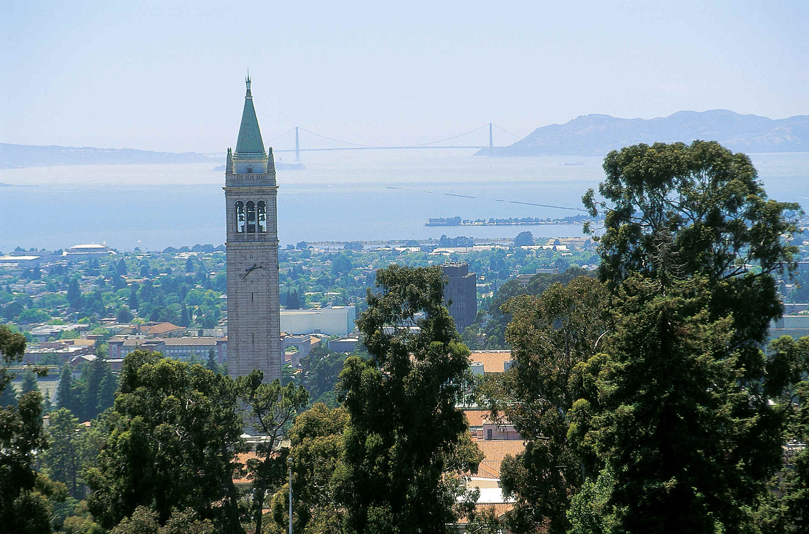
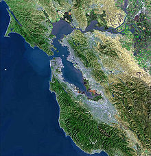

All about Berkeley, CA
Overview
Berkeley is a city on the east shore of San Francisco Bay in northern Alameda County, California which is named after the eighteenth-century bishop and philosopher George Berkeley. It borders the cities of Oakland and Emeryville to the south and the city of Albany and unincorporated community of Kensington to the north. Its eastern border with Contra Costa County generally follows the ridge of the Berkeley Hills. Its population at the 2010 census was determined to be 112,580. It is one of the most politically liberal cities in the United States.
Berkeley is the site of the oldest campus in the University of California system – the University of California, Berkeley – and of the Lawrence Berkeley National Laboratory that the university manages and operates. It is also home to the Graduate Theological Union.
Early History
The site of today's city of Berkeley was the territory of the Chochenyo/Huchiun band of the Ohlone people when the first Europeans arrived.[8] Evidence of their existence in the area include pits in rock formations, which they used to grind acorns, and a shellmound, now mostly leveled and covered up, along the shoreline of San Francisco Bay at the mouth of Strawberry Creek. Other artifacts were discovered in the 1950s in the downtown area during remodeling of a commercial building, near the upper course of the creek.
The first people of European descent (most of whom were born in America, and many of whom were of mixed ancestry) arrived with the De Anza Expedition in 1776.[9] Today, this is noted by signage on Interstate 80, which runs along the San Francisco Bay shoreline of Berkeley. The De Anza Expedition led to establishment of the Spanish Presidio of San Francisco at the entrance to San Francisco Bay (the Golden Gate), which is due west of Berkeley. Luis Peralta was among the soldiers at the Presidio. For his services to the King of Spain, he was granted a vast stretch of land on the east shore of San Francisco Bay (the contra costa, "opposite shore") for a ranch, including that portion that now comprises the city of Berkeley.
Geography
According to the United States Census Bureau the city's 17.7 square miles (46 km2) area includes 10.5 square miles (27 km2) of land and 7.2 square miles (19 km2) (40.83%) water, most of it part of San Francisco Bay. Berkeley borders the cities of Albany, Oakland, and Emeryville and Contra Costa County, including unincorporated Kensington, as well as San Francisco Bay. Berkeley lies within telephone area code 510 (until September 2, 1991, Berkeley was part of the 415 telephone code that now covers only San Francisco and Marin counties[23]), and the postal ZIP codes are 94701 through 94710, 94712, and 94720 for the University of California campus.
Please note this content is provided by Wikipedia.